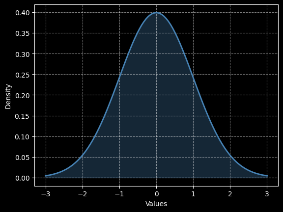

A little
about me!

Hello, my name is Antonio and I am currently in my last year at the university where I study Statistics. After some serious personal reflection on my passions and interests, I made a commitment to learn as much as I could about machine learning, data science, and the tech industry.
Ever since I was young, I have always loved solving puzzles. This is how I see big data sets: for me it's a big puzzle that I want to solve. Finding patterns that no one else sees is the challenge for me.